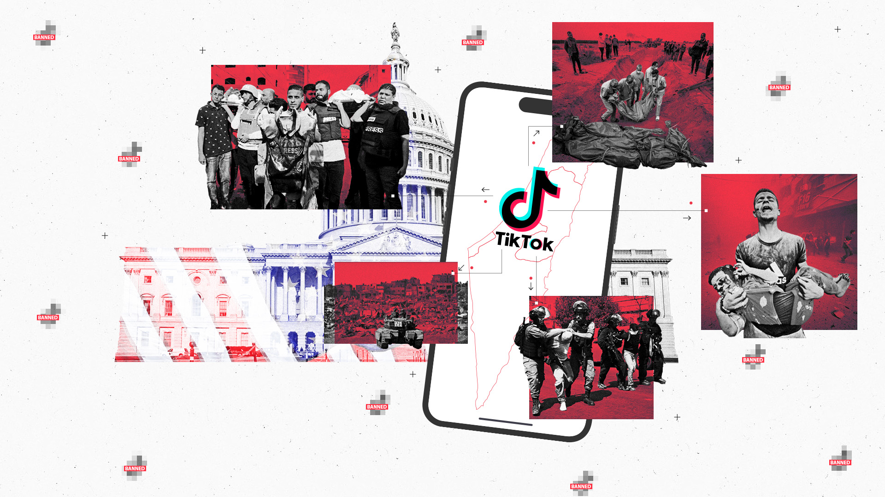
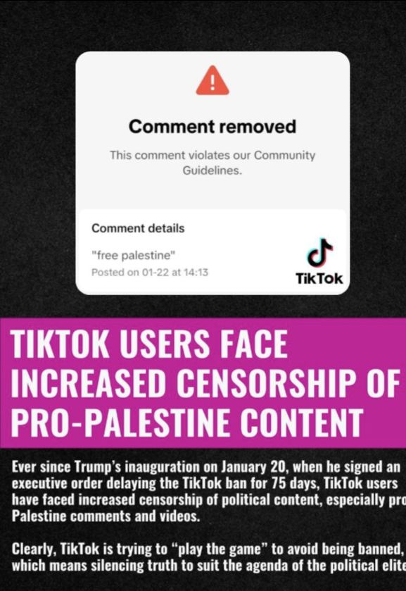

TikTok
Gaza's Technological Realities with Journalism
TikTok has grown into an essential resource for Palestinians in Gaza, allowing them to spread knowledge about Israel's occupation and raise funds for their vital necessities in what Amnesty International describes as a genocide. However, producing footage for social media in Gaza has its own set of challenges. "I have to travel long distances to find internet access to connect with the outside world and I have to stand in long lines to charge my phone using solar power," Obaid explained during an interview. "On cloudy days, when there is no sun, charging is impossible." "Of course, I won't stop," he declared. "The world needs to see the scale and horror of what we have endured."
According to Gaza's Health Ministry, Israel's war has killed at least 48,000 Palestinians, the bulk of which are women and children, and injured over 110,000 others. Since Israel's war on the Gaza Strip began in October 2023, the US has paid more over $17.9 billion in military support. With Palestinians like Obaid capturing their suffering, TikTok has evolved as a significant outlet for arguing against Western media perceptions about the war by providing firsthand accounts of life under bombing and siege. As international journalists remain to be refused access to Gaza, Palestinians turn into citizen journalists, tackling huge technological challenges and safety risks to interact with worldwide viewers through social media. This technological resilience has contributed to increase solidarity for the Palestinian cause, especially with young Americans who primarily absorb news from social media.
"TikTok's ownership structure makes it an alternative space for discourse, dialogue, and dissent that allowed pro-Palestinian content to circulate without immediate suppression," a John Hopkins assistant professsor of International Relations, Lisel Hintz, remarked. As Israel damages agricultural and water supply systems, recordings of Palestinians cooking with alternative food, caring for their pets, and water extraction have become acts of resistance in their own sense. Media of everyday life under siege has elevated Palestinian solidarity from a single person to a worldwide movement.
TikTok, which has over 170 million annual American users, is particularly widespread amongst young teenagers. In September 2024, A poll conducted by the Pew Research Center indicated that one in four young individuals in the United States claimed to receive their news from the app, an entity of the Chinese corporation ByteDance. Since October 2023, several American representatives have made statements implying that the reasons for banning TikTok were related to restricting pro-Palestine information on the app. Attempts to ban TikTok took place back to July 2020, when Trump proposed the idea as some type of reaction for China's alleged mistreatment of the COVID-19 pandemic. He signed an executive order banning the app on August 6, claiming that its data gathering tactics may enable the Chinese government to obtain Americans' private data, monitor federal staff, execute corporate surveillance, and promote propaganda favourable to China; efficiently leaving it on pending.
After a five-year dispute among the US government and TikTok, Congress implemented a measure on March 13, 2024, prohibiting the social network 352 - 65 except if ByteDance transferred its ownership interests to an American firm within a period of 90 days. The software "is controlled by a foreign adversary and has been determined by the President to present a significant threat to national security" referring to the Protecting Americans from Foreign Adversary Controlled Applications Act. To great uncertainty, TikTok returned online for American users in only 12 hours after the ban was set into motion on January 19th. A pop-up notification greeted users back into the app, saying, "Thanks for your patience and support. TikTok has returned to the United States thanks to President Trump's efforts!"
A Lifeline for Gaza
During a discussion with Secretary of State Antony Blinken, on May 3, at the McCain Institute Sedona Forum, Mitt Romney disclosed: "Some wonder why there was such overwhelming support for us to shut down TikTok". The two politicians sat seated on stage, exchanging severe stares with the crowd and each other. "If you look at the postings on TikTok and the number of mentions of Palestinians, relative to other social media sites — it's overwhelmingly so among TikTok broadcasts." User activities, particularly the duration they spend watching videos, have the most impact on the content displayed in your feed. This indicated that users who liked, reacted on, or watched complete videos regarding the Gaza genocide were ultimately presented with a wide range of Palestinian voices, including those with small followings from the algorithm.
With entertainment, TikTok has evolved into a platform where young people can engage or address critical societal matters, such as discrimination and environmental issues, in a distinctive and individualized manner. An Associate Professor in Columbia University's, Iona Literat and the realm of Communication, Media, and Learning Technologies Design department, highlighted that political content on TikTok is generally portrayed in a comic or skeptical or dismissive fashion that is clear, exaggerated, and incorporates pop cultural elements. "It is deeply emotional, ranging from roaring laughter to rolling tears," Literat said in a 2023 paper. "And it is often profoundly personal, framing political issues through young people's personal experiences and worldviews."
Based on Hintz, once the US administration identifies TikTok as a national security threat, new grounds, such as the platform's distribution of pro-Palestinian voices, can be incorporated into the current narrative. This tactic, she claims, substantially increases public support for shutting the app.
After October 7th, a 27-year-old Palestinian-American content creator, Salma Shawa, claims she began submitting multiple TikTok videos daily. Shawa was brought up in Gaza before moving to the United States to further her studies and career. In her home in Boston, Shawa was eagerly recording the developing crisis through the first few weeks of Israel's war in Gaza, as her family continued to be confined beneath the oppressed strip."Creating material is exhausting even in normal times. It takes a mental toll, and during these times it's much more difficult," Shawa stated in a video posted on October 11, 2023, informing her fans on the situation in Gaza. Shawa looked tired, with purple bags under her eyes. "I have to do it while thinking for my parents' and brother's safety. I haven't slept properly in 5 days."
Shawa reflected on the event, saying, "I didn't realize I was gaining a following until about a month into the massacre. I don't think I was really present. My head was basically in a very messed-up state." Shawa, who has over 346,000 followers, frequently posts videos in which she speaks straight to the camera using a small microphone. She mixes stories, like sharing recollections of growing up in Gaza, with a political perspective to educate and inspire audiences to act, mainly through boycotts."If TikTok gets banned, it will be a huge setback," she informed me. "I'm certainly worried since the app's reach is enormous. People have organized protests and fundraisers in unusual ways. For Palestine, the app has been useful.
Governmental Involvement Surrounding Pro-Palestine Content
On October 25, 2023, fewer than three weeks after Israel initiated its air strikes assault on the Strip, former Tinder CEO Jeff Morris Jr. offered a negative evaluation of TikTok's influence in changing public opinion: "Israel is losing the TikTok war by a long shot".His comments, published in a viral discussion on X, sparked calls from various politicians to ban TikTok.On November 15, 2023, Republican Sen. Josh Hawley wrote to Treasury Secretary Janet Yellen, demanding him to prohibit all ByteDance-controlled apps available to US consumers, citing a spike in "anti-Israel content" on TikTok.Several representatives have claimed the Chinese government of purposely manipulating TikTok's algorithm to elevate pro-Palestine content.
"Too much criticism of Israel is permitted to circulate there, and they decided they need to ban TikTok to regain control of the minds of young Americans, particularly the younger generations," Christensen said. Despite that the US government recognizes it has insufficient proof that China has personally influenced TikTok's algorithm, it insists there is a danger of such intervention. Given a lack of evidence, lawmakers continue to make allegations about Chinese involvement on TikTok." Instagram does not introduce you to as many new individuals or ideas. However, TikTok's algorithm expands the user's community, which is why it is viewed as a danger in the United States—it is an app where individuals can connect and form relationships with others," Shawa explained.
As mentioned previously, Human Rights Watch published a 51-page analysis on December 20, 2023, outlining how Meta's content moderation rules on Instagram and Facebook have progressively silenced pro-Palestinian views. Internal policy conversations reviewed by The Intercept indicated that Meta's Israel and Jewish Diaspora Policy Chief, Jordana Cutler, utilized the company's content escalation channels to censor posts critical of Israel's policies. TikTok has become an important alternative for those who are unable to protest for Palestine owing to government surveillance, particularly through fundraising efforts. The platform has enabled Palestinians in Gaza to boost their efforts to raise funds on GoFundMe, seeking assistance for migration costs and rising food prices in the midst of Israel's continuous siege.

Yet, the obstacles to getting these resources are high. GoFundMe only accepts bank accounts from a limited number of countries, the majority of which are in the West, preventing many Palestinians from withdrawing funds immediately. Instead, they frequently rely on international partners to organize fundraisers on their behalf and send donations. American TikTok users have contributed to an essential role in overcoming this disparity, either by promoting affiliated with Gaza fundraisers on their platforms or by providing live stream income towards Palestinians in need. "If you are a pro-Palestine supporter, you have probably met at least one Palestinian family from Gaza. This could transpire through donations, mutual help, direct interactions, or simply watching their videos on TikTok or Instagram."